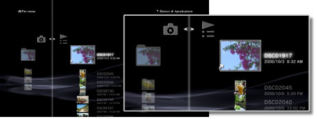
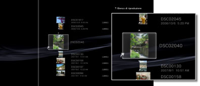

Foto > Utilizzo degli elenchi di riproduzione > Modifica degli elenchi di riproduzione
Modifica degli elenchi di riproduzione
È possibile aggiungere, eliminare o riordinare immagini in un elenco di riproduzione.
Aggiunta di immagini agli elenchi di riproduzione
1. |
Selezionare |
|---|---|
2. |
Selezionare l'elenco di riproduzione che si desidera modificare, quindi premere il tasto |
3. |
Selezionare [Modifica].  |
4. |
Premere il tasto |
 (Foto) > (Elenchi di riproduzione).
(Foto) > (Elenchi di riproduzione). .
. , quindi selezionare l'immagine che si vuole aggiungere all'elenco di riproduzione fra quelle salvate nella memoria di sistema.
, quindi selezionare l'immagine che si vuole aggiungere all'elenco di riproduzione fra quelle salvate nella memoria di sistema. per terminare le modifiche.
per terminare le modifiche.Eliminazione di immagini dagli elenchi di riproduzione
1. |
Selezionare |
|---|---|
2. |
Selezionare l'elenco di riproduzione che si desidera modificare, quindi premere il tasto |
3. |
Selezionare [Modifica]. |
4. |
Selezionare l'immagine che si vuole eliminare dall'elenco di riproduzione, quindi premere il tasto |
 . L'immagine viene eliminata dall'elenco di riproduzione. Una volta completata l'operazione di eliminazione, premere il tasto
. L'immagine viene eliminata dall'elenco di riproduzione. Una volta completata l'operazione di eliminazione, premere il tasto Note
- Anche se un'immagine è stata eliminata dall'elenco di riproduzione, il file immagine non viene eliminato dalla memoria di sistema.
- Se un'immagine aggiunta ad un elenco di riproduzione viene eliminata dalla memoria di sistema, verrà automaticamente eliminata anche dall'elenco di riproduzione.
Riordino delle immagini negli elenchi di riproduzione
1. |
Selezionare |
|---|---|
2. |
Selezionare l'elenco di riproduzione che si desidera modificare, quindi premere il tasto |
3. |
Selezionare [Modifica]. |
4. |
Selezionare le immagini che si desidera spostare e premere quindi il tasto  |
5. |
Utilizzare i tasti |
 .
. per spostare l'immagine nella posizione desiderata, quindi premere il tasto
per spostare l'immagine nella posizione desiderata, quindi premere il tasto